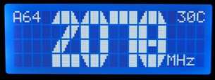
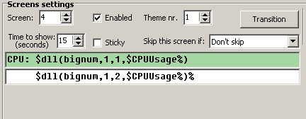

BigNum Plugin for LCD Smartie
2 line high numbers 4 line high numbers [photos by WaterCoolingShop.com]
FAST START GUIDE
If you hate reading instructions then here's the fast start guide:
- Download zip file
- Exit Smartie
- Extract bignum.dll to smartie's plugins subdirectory
- Extract config-bignum.ini to smartie's top directory
- Rename the existing config.ini to config.ini.bak
- Rename config-bignum.ini to config.ini
- Start Smartie, see demo screens
- Edit/Copy demo screens
This is a plugin that makes it possible to display big numbers, currently numbers that are two and four lines high are supported.
Limitations
This plugin redefines the custom characters, so no graphs can be displayed on the same screen. Also Only one type of big number can be displayed on a screen at a time.
Download
BigNum Plugin Alpha 2 can be downloaded here.
Install
To install this plugin copy the bignum.dll into the plugins directory of LCD Smartie. [Only the 5.3 beta 2 and above builds are supported.]
The zip file also includes a config-bignum.ini file which shows how the plugin can be used - backup your config.ini file before renaming this as config.ini.
Usage
To use the plugin you will need to insert commands into the your screens - please ensure that all bignum lines have a consistant scroll setting (i.e. all on or all off)!
The command takes the following form: $dll(bignum,1,[linenum]#[height]#[font],[text])
- [linenum] - is the line you want drawn (so 1 is the top of the number, 2 the next line, etc)
- [height] - is the height of the big number. This can currently be 2 or 4 lines. [Defaults to 2]
- [font] - is the style wanted for the bars. [Defaults to 1]
For 2 line high numbers:- 0 is none; define your own
- 1 is standard [default]
- 2 is bold
- 3 is standard but for cheap displays where the bottom row of pixels are a solid bar.
- 4 is bold but for displays where the bottom row of pixels are a solid bar (badly implemented HD44780 lcds)
- 0 is none; define your own
- 1 is standard [default]
- 2 is standard font but for displays where the bottom row of pixels are a solid bar (badly implemented HD44780 lcds).
Examples:
- $dll(bignum,1,1#2,$CPUUsage%)
- $dll(bignum,1,2#2,$CPUUsage%)
- $dll(bignum,1,1#4,$CPUUsage%)
- $dll(bignum,1,1,$CPUUsage%)
- $dll(bignum,1,1#2#1,$CPUUsage%)
On a two line display you would use something like this:

On a four line display you would use something like this: